突击兵 Missions
“深入敌后。部分任务将很难获得超级驱逐舰支援。
— 任务 Briefing
突击队任务是  机器人 Exclusive Missions 仅出现在任何正在进行……的机器人星球上的特殊突击队行动中 解放 战役。
机器人 Exclusive Missions 仅出现在任何正在进行……的机器人星球上的特殊突击队行动中 解放 战役。
突击队任务为绝地潜兵提供很少或根本没有任何来自……的支持 超级驱逐舰，使绝地潜兵在任务的大部分时间里无法呼叫战略配备。突击队任务非常适合 Stealth 玩法，因为它们不鼓励与敌人进行大多数直接对抗，而是优先采用专注于避开敌人并潜行完成任务目标的玩法。
可用任务[edit | edit 来源]
以下是游戏中当前可用的突击队任务：
| 图标 | 任务 |
|---|---|
 |
突击兵: Secure Black Box |
 |
突击兵: 获取 证据 |
 |
突击兵: 撤离 Intel |
独特机制[edit | edit 来源]
威胁等级[edit | edit 来源]
突击队任务独有的系统是随……变化的 威胁等级。任务开始时，敌人存在感较低，导致哨站、兴趣点和巡逻队中的敌人数量低于平均水平，大型敌人也更少（取决于难度）。当敌人呼叫增援时，不仅会有机器人空投抵达，威胁等级也会提升。这会导致地图各处哨站、兴趣点和巡逻队中出现更多敌人。此外，更高等级的敌人开始更常见地出现（即常规巡逻队可能包含更多 Hulks or Reinforced 侦察纵步者们）。
战略配备[edit | edit 来源]
绝地潜兵只能在超级驱逐舰在该区域时呼叫战略配备。首次降落进入任务区域时， 绝地潜兵有60秒时间呼叫战略配备。这段时间最好用来呼叫绝地潜兵带来的申购支援武器/背包。时间结束后，超级驱逐舰将离开该区域，除非绝地潜兵呼叫它返回，否则不会回来；呼叫后它将再返回60秒。 超级驱逐舰每位绝地潜兵每次任务只能返回一次，因此建议只在面对压倒性劣势时才呼叫其返回。
增援[edit | edit 来源]
由于任务期间超级驱逐舰不在场， 增援 不会以你惯常的方式呼叫。 绝地潜兵以零增援开始任务，必须通过激活……来获取它们 增援 Pods。激活增援舱将为小队额外提供三次增援。绝地潜兵被增援时，将从距离呼叫增援者最近的增援舱组部署。 任务区域中总是会有四组增援舱，总共十二次额外增援，无论小队规模如何.
与增援相关的 Boosters 例如 已增加 增援预算 和 灵活增援预算 无法在空投前选择。
可选目标[edit | edit 来源]
突击队任务始终包含四个 增援 Pods 并且，在……时  中型 及以上时，会额外出现一个 可选目标 在任务区域中。这些可选目标随难度变化，范围从 消除 机器人 Hulks to Intercept Convoy。额外的可选目标永远不会是友好目标，例如 SEAF 大炮 or a SEAF SAM Site，或需要……的任务 地狱火炸弹, such as 战略配备干扰器 or 探测器 Tower.
中型 及以上时，会额外出现一个 可选目标 在任务区域中。这些可选目标随难度变化，范围从 消除 机器人 Hulks to Intercept Convoy。额外的可选目标永远不会是友好目标，例如 SEAF 大炮 or a SEAF SAM Site，或需要……的任务 地狱火炸弹, such as 战略配备干扰器 or 探测器 Tower.
另见[edit | edit 来源]
有关如何正确应对突击队任务的推荐战术，请参阅 Stealth.
变更历史[edit | edit 来源]
1.006.300
2026-06-16
Change
- 提示：突击队任务中增援绝地喷射舱的位置放置得更合理。